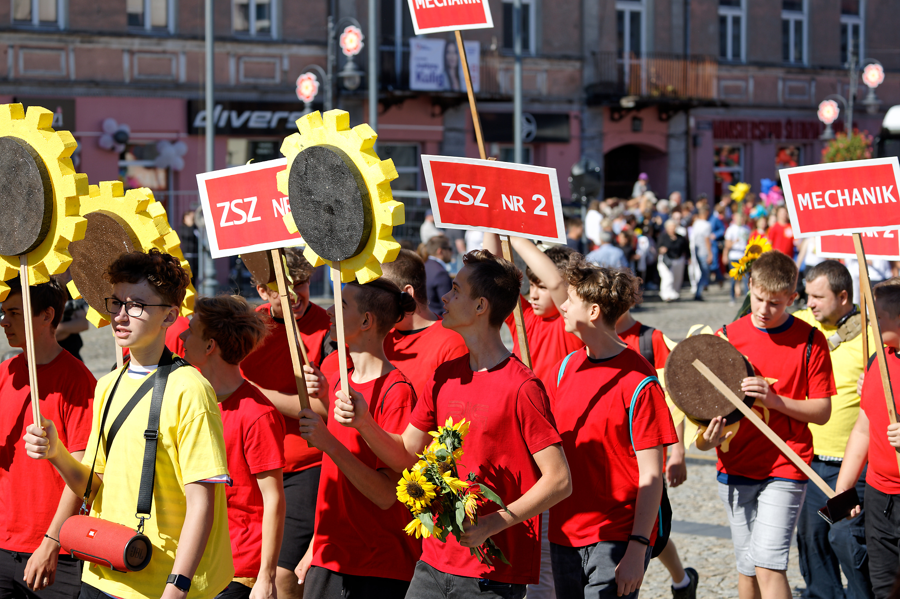
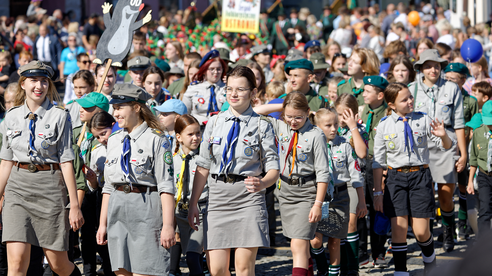
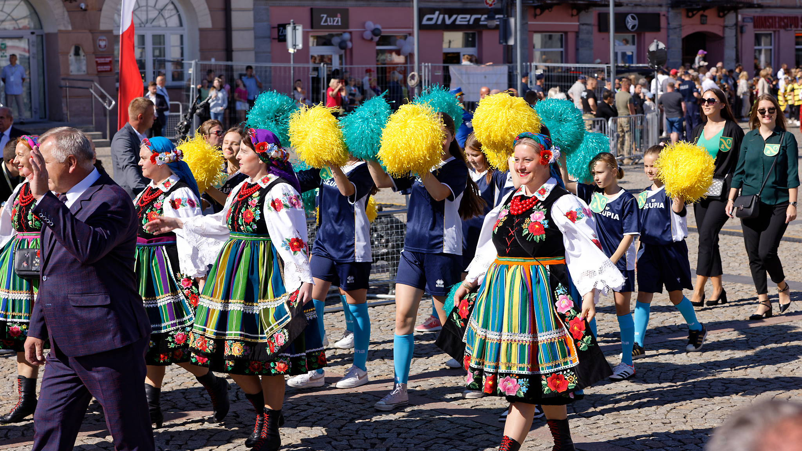
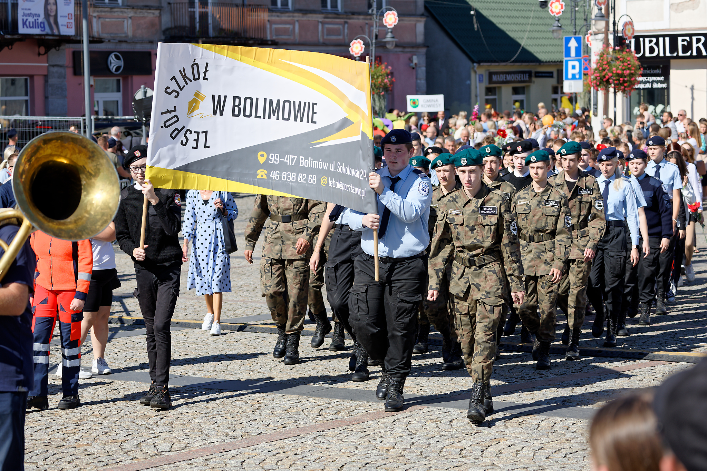
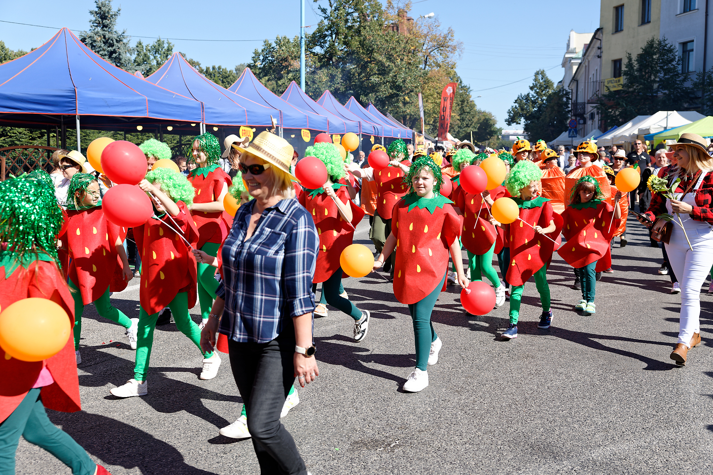
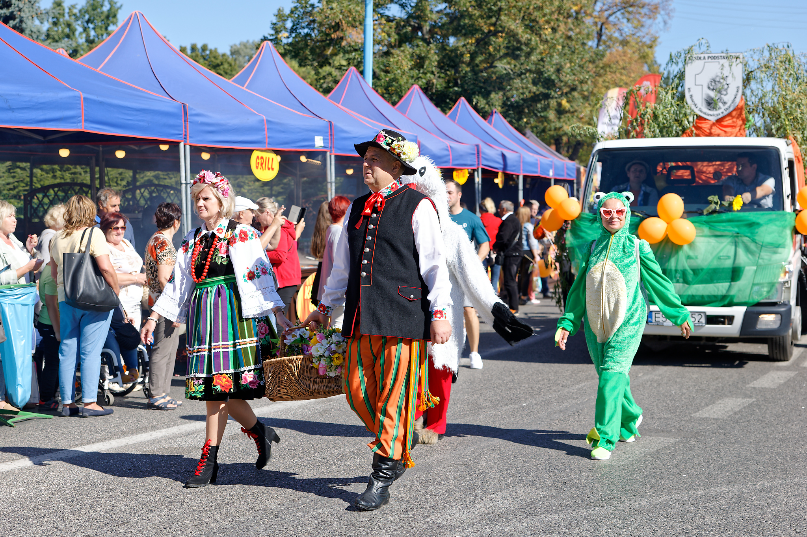
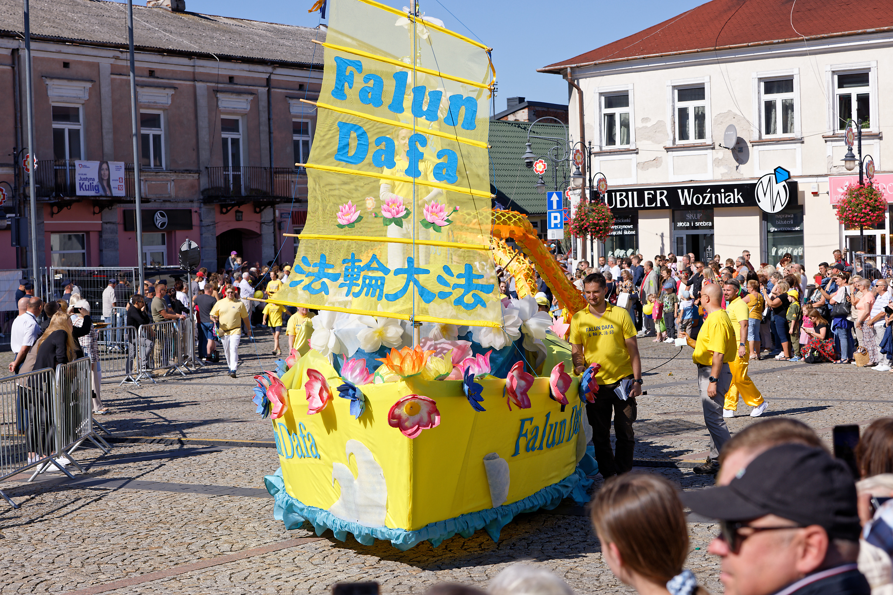

Witamy w Skierniewicach!
Skierniewickie Święto Kwiatów, Owoców i Warzyw to jedno z największych i najbardziej kolorowych wydarzeń w regionie. Odbywa się co roku we wrześniu i przyciąga tłumy mieszkańców oraz turystów. Podczas święta miasto zamienia się w prawdziwą festiwalową przestrzeń pełną kwiatów, owoców i warzyw. W programie znajdują się parady, koncerty, targi ogrodniczo-rolne, wystawy oraz pokazy. Nie brakuje również stoisk handlowych i stref gastronomicznych, gdzie można spróbować lokalnych przysmaków.
Parady







Program Koncertów na Scenie Głównej
| Godzina | Wydarzenie |
|---|---|
| Piątek | |
| 18:00 | Otsochodzi |
| 19:15 | Kronkel Dom |
| 20:30 | Guzior |
| 21:45 | Reto |
| Sobota | |
| 18:00 | Smolik/Kev Fox |
| 19:20 | Kombi Łosowski |
| 20:45 | Dawid Kwiatkowski |
| 22:20 | Wilki |
| Niedziela | |
| 17:00 | Kacperczyk |
| 18:20 | Brodka |
| 19:40 | Margaret |
| 21:20 | Artur Rojek |